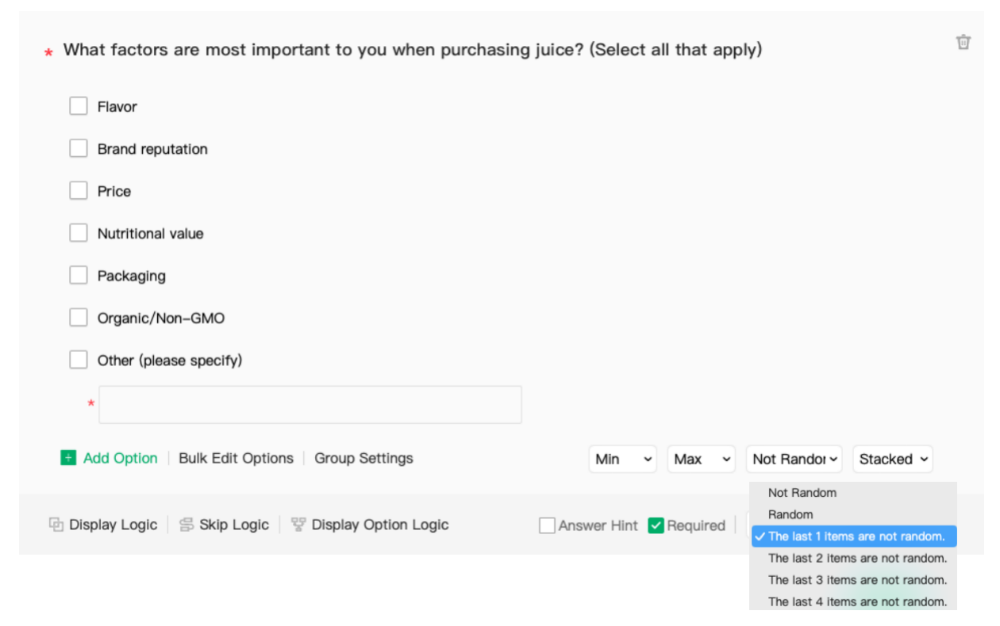
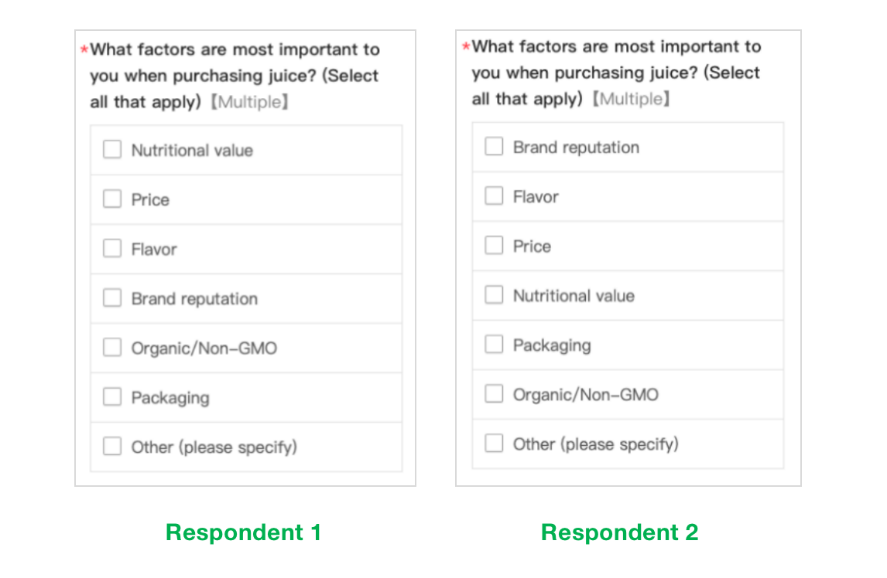

Back to Blog Home
Back to Blog Home
Enhance Survey Effectiveness: The Power of Option Randomization
Options randomization is a technique used in surveys to improve the quality of responses by reducing bias and increasing reliability. It involves randomizing the order of response options for each question, ensuring that each respondent is presented with the options in a different order. In this article, we will discuss how options randomization can improve your surveys and provide some tips for implementing this technique.
Benefits of Randomizing Options
1. Reduce Order Bias
Order bias is a common problem in surveys where the order in which response options are presented can influence the respondent's answer. This bias can occur when the first option presented is perceived as the most important or most likely, leading the respondent to choose it. Options randomization can help reduce this bias by presenting the response options in a different order for each respondent. This ensures that no option is consistently presented first or last, reducing the likelihood of order bias.
2. Increase Reliability
Reliability is a measure of the consistency of responses to a survey question. When response options are presented in a consistent order, it can lead to response biases that reduce the reliability of the data collected. For example, if the first option is always the most positive, respondents may be more likely to choose it, leading to inflated results. Options randomization can increase the reliability of survey data by reducing the influence of response biases and ensuring that each respondent is presented with the options in a different order.
3. Improve Data Quality
Options randomization can also improve the quality of survey data by reducing the impact of response errors. Response errors occur when respondents select an option that does not accurately reflect their opinion or experience. This can happen when the options are not relevant, ambiguous, or difficult to understand. By randomizing the order of response options, options that may be more prone to errors are less likely to be selected, leading to more accurate and reliable data.
4. Enhance Survey Experience
Options randomization can also enhance the survey experience for respondents. By presenting response options in a different order, respondents are less likely to feel fatigued or bored by the survey. This can improve their engagement and willingness to provide thoughtful and accurate responses. Additionally, options randomization can help prevent respondents from selecting the same response option repeatedly, which can reduce the validity of the survey results.
Tips for Implementing Options Randomization
1. Use a Randomizer
To ensure that response options are randomized for each respondent, use a randomizer tool or software. This will ensure that the order of response options is different for each respondent and reduce the likelihood of order bias.
SurveyPluto offers diverse randomization options: such as “No Random”, “Random”, “The last 1 items are not random”, “The last 2 items are not random”. A better approach is to place the answer option 'Other' at the end, as this ensures consistency and avoids confusion. This can be achieved by using the method of 'The last 1 items are not random'.


2. Keep Options Consistent
While randomizing the order of response options, ensure that the options themselves remain consistent. This means that the wording and meaning of each option should be the same for each respondent. This will help ensure that the responses are comparable and can be analyzed accurately.
3. Test the Survey
Before distributing the survey, test it with a small group of respondents to ensure that the response options are clear, relevant, and easy to understand. This will help identify any issues with the options and ensure that the survey is effective in collecting reliable and accurate data.
4. Consider the Context
When randomizing response options, consider the context of the question and the survey. For example, if the survey is about customer satisfaction, it may be important to present the most positive response options first to create a positive impression. However, if the survey is about a controversial issue, it may be more appropriate to randomize the order of response options to reduce the impact of order bias.
Conclusion
In conclusion, options randomization is a useful technique for improving the quality of survey data by reducing bias, increasing reliability, and enhancing the survey experience. By randomizing the order of response options, survey designers can ensure that each respondent is presented with the options in a different order, reducing the impact of response biases and errors. When implementing options randomization, it is important to use a randomizer tool, keep the options consistent, test the survey, and consider the context of the question and survey.